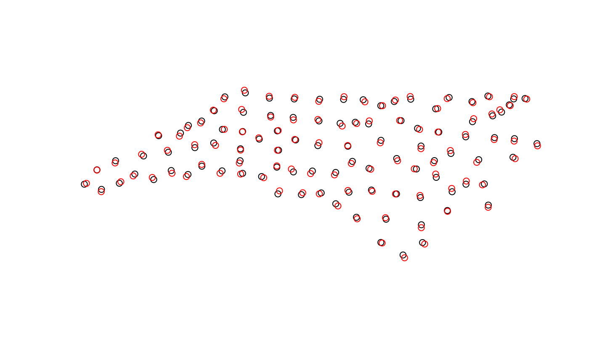
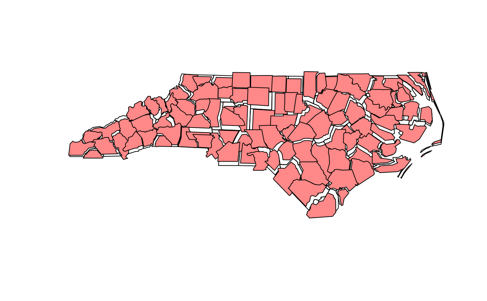

jitter geometries
Details
jitters coordinates with an amount such that runif(1, -amount, amount) is added to the coordinates. x- and y-coordinates are jittered independently but all coordinates of a single geometry are jittered with the same amount, meaning that the geometry shape does not change. For longlat data, a latitude correction is made such that jittering in East and North directions are identical in distance in the center of the bounding box of x.
Examples
nc = st_read(system.file("gpkg/nc.gpkg", package="sf"))
#> Reading layer `nc.gpkg' from data source
#> `/home/runner/work/_temp/Library/sf/gpkg/nc.gpkg' using driver `GPKG'
#> Simple feature collection with 100 features and 14 fields
#> Geometry type: MULTIPOLYGON
#> Dimension: XY
#> Bounding box: xmin: -84.32385 ymin: 33.88199 xmax: -75.45698 ymax: 36.58965
#> Geodetic CRS: NAD27
pts = st_centroid(st_geometry(nc))
plot(pts)
plot(st_jitter(pts, .05), add = TRUE, col = 'red')

plot(st_geometry(nc))
plot(st_jitter(st_geometry(nc), factor = .01), add = TRUE, col = '#ff8888')
